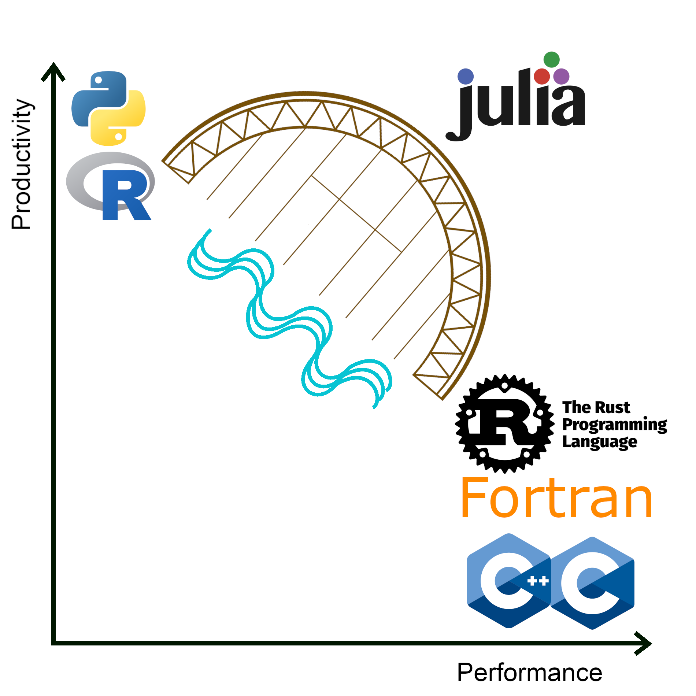

Introduction Julia¶
Learning outcomes for today
- Learn how to load Julia modules and access site-installed Julia packages
- Grasp the concept of Julia environments
- Familiarize with Julia packages installation with
Pkg - Acquire the knowledge of writing batch scripts for running Julia
- Discover and explore the different Julia parallelization tools
- Learn how Julia supports GPU computing
- Gain knowledge on how to run ML jobs in Julia
Your expectations?
- Find best practices for using Julia at UPPMAX and HPC2N
- Get the hang of packages functioning
- Use the HPC performance with Julia
Not covered
- Improve Julia coding skills
- Other clusters
Instructor note
- Intro 5 min
- Lecture and 10 min
What is Julia?¶
Julia is a relatively new Programming language (pre-released 1.0 announced in 2018), compared to well-known and standard languages such as Fortran, C, C++, R, and Python (some of them date back to the 70’s). A common pattern in those well-established languages (traditional paradigm) is that they look after either:
- productivity (fast deployment, fast prototyping) or,
- performance (fast numerical computations).
This pattern created the so called two-language problem where programmers had to choose between productivity (R, Python) or performance (Fortran, C/C++) and when both were needed programmers had to learn the language that offered the desired capability and use some interface between different languages. Performant languages traditionally need to be compiled while languages focusing on productivity are interpreted.
Among the different features of Julia, is its capability of integrating both aspects productivity and performance into a single language. In this way, Julia programmers can in principle write software without changing their focus to learn a new language.

Two-language problem where Julia is shown as a bridge between the languages in the traditional paradigms, productivity vs. performance.
Features of Julia¶
According to the Julia documentation some of the features of this language are:
- Good Base library with efficiently implemented operations written in Julia itself
- “Good performance, approaching that of statically-compiled languages like C”
- Modular and self-contained approach for libraries and development
- “A rich language of types for constructing and describing objects”
- A fast growing community of users and developers
Shortcomings of Julia¶
- As this is a new language, the libraries ecosystem is not as rich as in Python or R, for instance
- Currently, using Julia for simple tasks (for instance, opening a file and writing text, plotting) is not as efficient as using Linux tools (AWK, GREP) or compiled languages (Fortran, C/C++, Rust)
- Previous situation is more noticeable upon running simple tasks in parallel mode (MPI, Threads)
- An initial code version can be fast (compared to base Python) with a code that is clear to novices and without spending a long time writing. However, if one needs to get a more optimized code, it would most likely increase its complexity (readability) and one would need to spend more time (learning/programming) as in the case of C/C++/Fortran.
More on Julia¶
- Official Julia documentation is found here
- Official Julia discussion/support forum is here
- Slack channel for Julia and instructions for joining it are found here: https://julialang.org/slack/
- HPC2N YouTube video on Julia in HPC
- Extra materials in these course pages
Julia documentation at the centers¶
- UPPMAX
- HPC2N
- LUNARC has no specific Julia documentation, but you can find installed versions here
- NSC
- PDC
Key points:
- Julia is a relatively new language with several attractive features.
- Julia purpose is to avoid changing between high performance and high productivity languages in the different phases of code development.